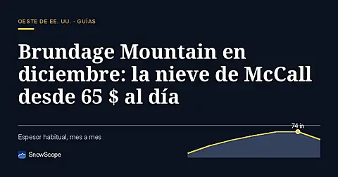
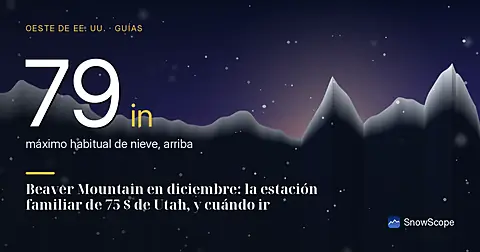

Indy Pass contra forfaits diarios en diciembre: cuándo compensa el pase de 419 $
El Indy Pass te da dos días en cada una de más de 300 estaciones de esquí independientes por $419. Para un esquiador de diciembre, la pregunta real no es solo el precio, sino si las pequeñas montañas del interior del Oeste y las Montañas Rocosas realmente tienen nieve cuando la necesitas. Revisamos siete estaciones Indy que están en la lista de diciembre de SnowScope y calculamos cuándo el abono te sale mejor que comprar entradas diarias en cada estación por separado.
Consulta la previsión de nieve en tiempo real de US West en la app SnowScopeEspesor de nieve, alertas de nieve polvo y mapa 3D, gratis.
Lo que pagas por el abono y lo que cuestan dos días en su lugar
El Indy Base Pass para 2026-27 cuesta $419 para adultos e incluye dos entradas de día completo u noche completa en cada estación asociada, con algunas fechas bloqueadas. El Indy+ Pass cuesta $469 y elimina las fechas bloqueadas. Si planeas un viaje en diciembre que podría cruzar el período de vacaciones, la cuestión de las fechas bloqueadas importa tanto como la diferencia de $50.
Aquí está lo que cuestan dos días a precio completo en las estaciones que revisamos. Loveland es la más barata si compras online antes del 14 de diciembre a $120 por dos días, pero sube a $318 a partir del 14 de diciembre en adelante. Brundage comienza a $130 por dos días. White Pass cuesta $138 en su tarifa online más baja de temporada baja. Sunlight comienza a $148. Beaver Mountain es $150. Montana Snowbowl cuesta $156 entre semana o $170 en fin de semana. Snow King comienza a $200. El abono se amortiza a partir de la tercera estación si usas entradas diarias, pero a partir de la segunda si pagas precios de fin de semana o de temporada alta.

Las probabilidades de nieve determinan la verdadera decisión
La nieve de diciembre no está garantizada en ningún lugar de los 48 estados continentales, pero el noroeste del interior y las Montañas Rocosas del norte tienen más probabilidades que las llanuras altas de Colorado. Mirando 46 inviernos pasados, White Pass, Snow King y Brundage tienen cada una un 87 % de probabilidad de tener al menos 50 cm a media montaña antes del 15 de diciembre. Montana Snowbowl alcanza un 83 %. Sunlight se sitúa en un 72 %. Loveland está en un 67 %, y Beaver Mountain es la excepción con un 57 %.
Estas probabilidades te dicen dónde construir un viaje de carretera Indy de diciembre. Un recorrido por el noroeste y las Montañas Rocosas del norte—White Pass en Washington, Brundage en Idaho, Montana Snowbowl en Montana y Snow King en Wyoming—te pone en terrenos con historial de nieve real. Beaver Mountain y Loveland es mejor visitarlas más tarde en diciembre, cuando sus probabilidades de nieve mejoran notablemente.
Cuándo saltarte el abono y comprar días sueltos
¿Uno o dos días en una sola estación? Las entradas diarias ganan siempre. Un lunes en Montana Snowbowl cuesta $78. Un día entre semana en Beaver Mountain corre $75 por un paquete de 10, o unos $72 por día. Ninguno es lo bastante caro para justificar llevar un abono que no usas en otra parte.
Loveland es un caso especial. Su entrada online de temporada temprana hasta el 13 de diciembre cuesta $60. Es más barato que cualquier día suelto que podrías asignar del Indy Pass, así que si esquías Loveland en las dos primeras semanas de diciembre, compra la entrada online y guarda el abono para otra estación.
El abono tiene sentido para viajes de múltiples estaciones
El Indy Pass está pensado para un esquiador diferente: alguien que se mueve entre pequeñas montañas y distribuye el abono a lo largo de toda una temporada. Diciembre es un buen momento para empezar a usarlo, porque dos de estas siete estaciones con nieve sólida en diciembre (White Pass y Brundage) son miembros del abono. Combínalas con Montana Snowbowl o Snow King en el mismo viaje y el abono comienza a salirte rentable.
Pero piensa en el Indy Pass como una herramienta de temporada completa, no una herramienta de diciembre. Úsalo ahora en las estaciones Indy más seguras de diciembre, luego vuelve a él en enero en otras estaciones asociadas a medida que las condiciones varían durante el invierno.
Cómo planificar un viaje Indy en diciembre
Elige tus fechas primero. Un viaje en la segunda o tercera semana de diciembre evita las tarifas de fin de semana de vacaciones y el período de máxima ocupación del 19 de diciembre al 3 de enero en la mayoría de las estaciones. En ese momento, las probabilidades de nieve ya son altas en la mayoría de estas áreas sin apostar en tormentas de finales de diciembre.
Luego apila tus visitas de dos días. Necesitas al menos tres estaciones para que el abono te salga rentable frente a los precios de entradas diarias. Si te mantienes en el circuito del noroeste y las Montañas Rocosas del norte, las probabilidades de encontrar nieve esquiable en dos o tres de tus paradas son buenas. Loveland y Beaver Mountain son apuestas más débiles en primeros de diciembre, así que usa el abono en las estaciones más seguras primero.
Consejos para esquiadores
- Esquía en tres o más estaciones en diciembre para que el abono de $419 merezca la pena; en una o dos montañas, compra entradas diarias en su lugar.
- Si tu viaje cruza el 19 de diciembre o las vacaciones, paga los $50 extra por Indy+ para evitar fechas bloqueadas.
- Construye tu viaje Indy de diciembre alrededor de White Pass, Brundage, Montana Snowbowl y Snow King; tienen las mejores probabilidades de nieve en diciembre entre estas siete estaciones.
- Las entradas online de Loveland de $60 hasta el 13 de diciembre superan cualquier día del abono, así que compra entradas para primeros de diciembre y usa el abono en otra parte.
- Sáltate los días entre semana y usa el abono en fines de semana y festivos cuando los precios de entradas diarias se disparan; un lunes en Montana Snowbowl ($78) o Beaver Mountain ($72) ya es un trato mejor.
Sobre estas cifras
Los espesores de nieve de las estaciones son la nieve más profunda en las pistas altas en la fecha indicada; son estimaciones para una zona, no una medida en un punto. Las previsiones pueden cambiar. Consulta siempre el boletín oficial de aludes antes de salir fuera de pista.
Citar este informe
Para investigación, docencia o prensa: cifras y gráficos reutilizables libremente bajo CC BY 4.0 con esta cita.
SnowScope (2026), Indy Pass contra forfaits diarios en diciembre: cuándo compensa el pase de 419 $, https://snowscope.app/blog/es/2026/11/indy-pass-vs-day-tickets-december-2026.html, consultado el 2026-11-14
SnowScope (Atlas Labs). (2026, November 14). Indy Pass contra forfaits diarios en diciembre: cuándo compensa el pase de 419 $. SnowScope snow reports. https://snowscope.app/blog/es/2026/11/indy-pass-vs-day-tickets-december-2026.html
BibTeX
@misc{snowscope2026indypassvsdayticketsdece,
author = {{SnowScope (Atlas Labs)}},
title = {Indy Pass contra forfaits diarios en diciembre: cuándo compensa el pase de 419 $},
year = {2026},
month = nov,
howpublished = {\url{https://snowscope.app/blog/es/2026/11/indy-pass-vs-day-tickets-december-2026.html}},
note = {Published 2026-11-15 09:34 UTC; accessed 2026-11-14}
}· CC BY 4.0 · Métodos, datos y herramientas →
Sigue US West
Gratis: un aviso cuando llega la nieve y la previsión cada mañana.
Más partes de nieve

Loveland vende entradas online de 60 € hasta el 13 de diciembre, luego 159 € a partir del 14 de diciembre. El promedio de nieve de principios de diciembre es de 20 cm a media montaña, pero la base tiene la mitad de profundidad que a mediados de invierno.

Brundage Mountain ofrece nieve fiable a principios de temporada cerca de McCall, Idaho. La profundidad típica a media montaña alcanza 77 cm a mediados de diciembre, con forfaits desde 65 $ en días seleccionados.

Beaver Mountain ofrece entradas de precio fijo a 75 dólares sin recargo en días de mayor afluencia. Principios de diciembre suele tener nieve escasa; apunta a mediados de mes o más tarde cuando la nieve es más fiable.